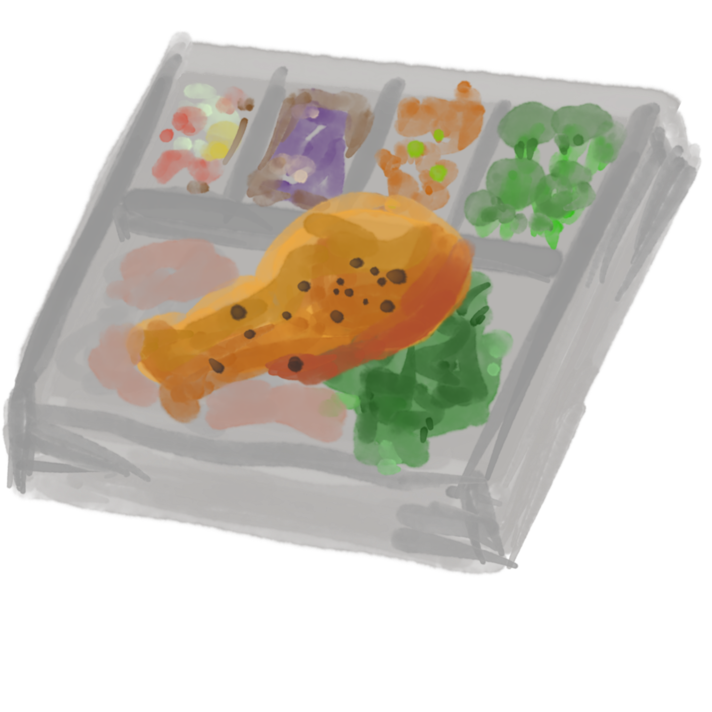

周邊美食地圖
從早八到宵夜・步行 10 分鐘覓食全攻略
剛進北科不知道中午要吃什麼？這裡整理了八德路光華巷弄、忠孝新生、華山市場到校內學餐的 16 間日常用餐名單。

戰區一：八德路 82 巷（光華巷）
北科學生一級戰區，大份量麵食、義大利麵、咖哩飯密集度最高，平均百元出頭就能吃飽。
戰區二：忠孝新生與濟南路
位於學校南側，用餐環境較寬敞，有知名水餃、日式定食與速食店，適合空堂時間較長時前往。
戰區三：華山市場周邊
想吃豐盛早午餐或排隊日料往這邊走，早起沒課時和同學一起去最合適。
戰區四：北科大校內速戰區
中午只有 50 分鐘空堂或下雨懶得出校門時，校內學餐與超商就是最穩定的選擇。
北科學生實測 16 間餐廳總表
依照用餐時段與預算分類，點擊右側連結可開啟 Google Maps 導航：
| 生存情境 | 店家名稱 | 必點招牌 | 平均價位 | 位置與地圖 |
|---|---|---|---|---|
| 早八能量補給 | 阿姐的店碳烤三明治 | 招牌總匯碳烤三明治 | $75 - $95 | 八德路一段82巷（地圖） |
| 早八厚實蛋餅 | 蛋幾勒蛋餅捲（光華總店） | 薯餅起司手擀蛋餅捲 | $60 - $85 | 八德路一段82巷9弄（地圖） |
| 沒早八早午餐 | 丘比手作土司早午餐 | 木盆沙拉／厚切吐司拼盤 | $130 - $190 | 忠孝東路一段108號華山市場2樓（地圖） |
| 月底巨無霸粗飽 | 銀記手擀刀切牛肉麵 | 炸醬麵／牛肉麵（免費加湯） | $110 - $170 | 八德路一段82巷9弄（地圖） |
| 月底免費加麵王 | 嵐迪義大利麵館 | 奶油培根／青醬雞肉義大利麵 | $100 - $140 | 八德路一段82巷9弄（地圖） |
| 重口味乾麵首選 | 垃圾(喇舌)麵 大乾泡菜豬排 | 大乾泡菜豬排麵 | $100 - $130 | 八德路一段82巷9弄（地圖） |
| 特色花雕雞麵 | 老德記手工拉麵店 | 花雕雞麵／雙醬手工拉麵 | $110 - $160 | 八德路一段82巷9弄（地圖） |
| 肉食主義大碗公 | 佐藤精肉店（八德店） | 烤五花肉飯（大盛） | $130 - $180 | 八德路一段82巷9弄（地圖） |
| 快速飽足咖哩飯 | 咖食堂 | 厚切豬排咖哩飯 | $110 - $150 | 八德路一段82巷9弄（地圖） |
| 排隊名店水餃 | 巧之味手工水餃（濟南店） | 干貝水餃（綠皮）／招牌水餃 | $80 - $120 | 濟南路二段6號（地圖） |
| 月初領錢犒賞餐 | 芝生食堂（忠孝新生店） | 日式定食／壽喜燒鍋物 | $220 - $300 | 忠孝東路二段134巷（地圖） |
| 超高 CP 值日料 | 合掌村（華山店） | 頂級十二貫握壽司／海鮮丼 | $250 - $380 | 忠孝東路一段108號華山市場1樓（地圖） |
| 下午茶銅板點心 | 光華紅豆餅 | 爆漿奶油／高麗菜車輪餅 | $15 - $30 | 八德路一段82巷口（地圖） |
| 課後邪惡炸物 | 轟炸雞排（光華店） | 起司爆漿雞排 | $85 - $100 | 八德路一段82巷（地圖） |
| 中午趕課首選 | 北科大校內學生餐廳 | 自助餐／快餐便當 | $65 - $95 | 北科大校內（地圖） |
| 期中熬夜討論聖地 | 麥當勞（台北濟南店） | 勁辣雞腿堡套餐／夜貓宵夜 | $120 - $180 | 濟南路二段66號（地圖） |
北科覓食生存守則
- 黃金錯峰時間：中午 12:00 鐘聲一響，八德路 82 巷 9 弄會瞬間客滿。如果第四節提早下課建議立刻出發，或等到 13:05 再去吃。
- 免費加麵與飲料福利：光華巷弄許多麵店與義大利麵館有提供學生免費加麵或免費紅茶與湯品，月底預算吃緊時可以多加利用。
- 外帶回校內吹冷氣：熱門小店尖峰時段內用一位難求，外帶回綜合科館、共同科館交誼區或社辦吃會更舒適。
- 假日公休注意：光華巷弄與華山市場部分店家週日或週一公休，假日來學校前記得先點表格連結確認營業狀態。